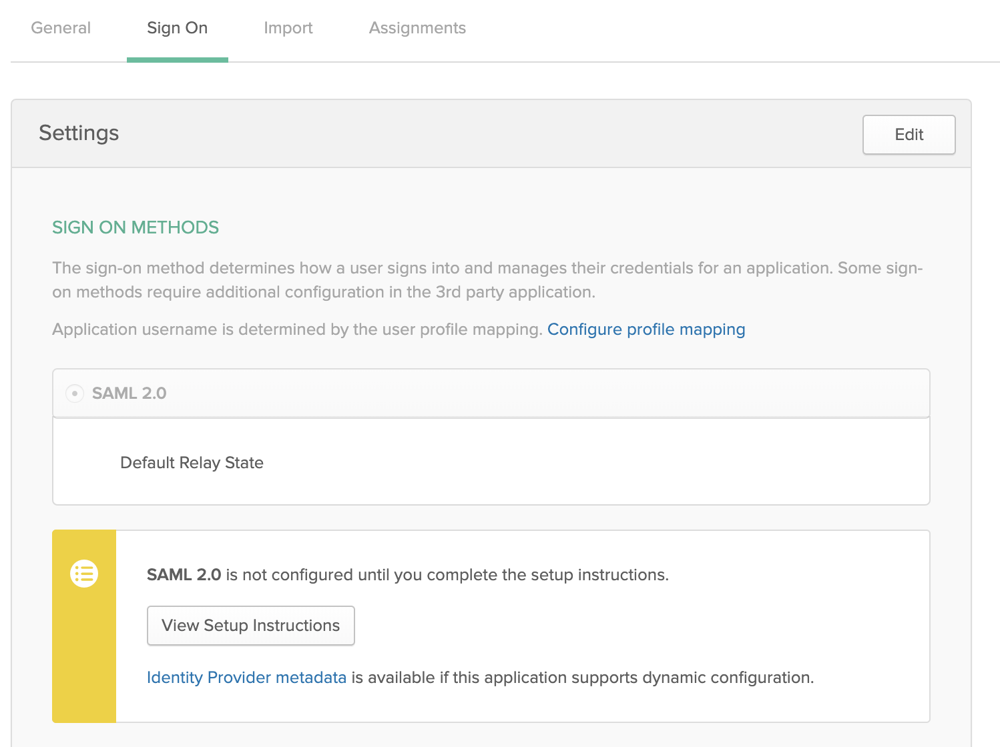
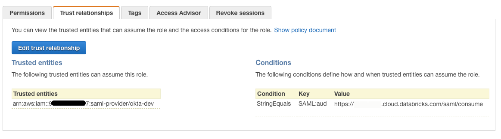
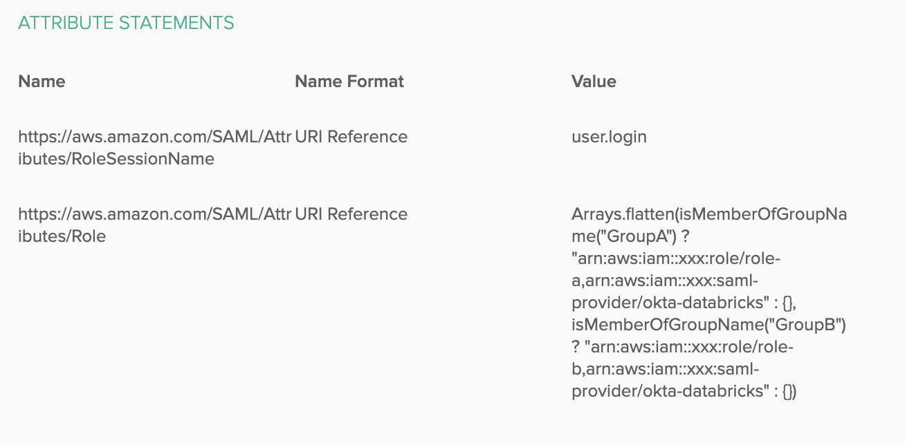
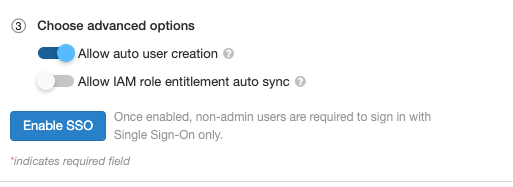
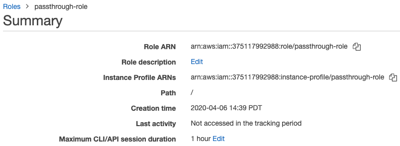

Access S3 with IAM credential passthrough with SAML 2.0 federation (legacy)
Important
This documentation has been retired and might not be updated.
IAM credential passthrough is a legacy data governance model. Databricks recommends that you upgrade to Unity Catalog. Unity Catalog simplifies security and governance of your data by providing a central place to administer and audit data access across multiple workspaces in your account. See What is Unity Catalog?.
AWS supports SAML 2.0 identity federation to allow for single-sign on to AWS Management Console and AWS APIs. Databricks workspaces that are configured with single sign-on can use AWS IAM federation to maintain the mapping of users to IAM roles within their identity provider (IdP) rather than within Databricks using SCIM. This allows you to centralize data access within your IdP and have those entitlements pass directly to Databricks clusters.
Note
IAM credential passthrough with SAML 2.0 federation can only be configured when unified login is disabled. Databricks recommends that you upgrade to Unity Catalog, see What is Unity Catalog?. If your account was created after June 21, 2023 and you require IAM credential passthrough with SAML 2.0 federation, contact your Databricks account team.
The following diagram illustrates the federation workflow:
Configure a trust relationship between your IdP and AWS accounts in order for the IdP to control which roles users can assume.
Users login to Databricks via SAML SSO, the entitlement to the roles are passed by the IdP.
Databricks calls the AWS Security Token Service (STS) and assumes the roles for the user by passing the SAML response and getting temporary tokens.
When a user accesses S3 from a Databricks cluster, Databricks runtime uses the temporary tokens for the user to perform the access automatically and securely.
Note
Federation for IAM credential passthrough always maps roles to users in SAML when the Allow IAM role entitlement auto sync is enabled. It will overwrite any previous roles set via the SCIM API.
Requirements
SAML single sign-on configured in your Databricks workspace.
AWS administrator access to:
IAM roles and policies in the AWS account of the Databricks deployment.
AWS account of the S3 bucket.
Identity provider (IdP) administrator to configure your IdP to pass AWS roles to Databricks.
A Databricks workspace admin to include AWS roles in the SAML assertion.
Step 1: Get the Databricks SAML URL
Go to the admin settings page.
Click the Single Sign-On tab.
Copy the Databricks SAML URL.

Step 2: Download identity provider metadata
Note
The steps within the identity provider console vary slightly for each identity provider. See Integrating Third-Party SAML Solution Providers with AWS for examples with your identity provider.
In your identity provider admin console, find your Databricks application for single sign-on.
Download the SAML metadata.

Step 3: Configure the identity provider
In the AWS console, go to the IAM service.
Click the Identity Providers tab in the sidebar.
Click Create Provider.
In Provider Type, select SAML.
In Provider Name, enter a name.
In Metadata Document, click Choose File and navigate to the file containing the metadata document you downloaded above.
Click Next Step and then Create.
Step 4: Configure the IAM role for federation
Note
Only roles used for data access should be used for federation with Databricks. We do not recommend allowing roles normally used for AWS console access as they may have more privileges than necessary.
In the AWS console, go to the IAM service.
Click the Roles tab in the sidebar.
Click Create role.
Under Select type of trusted entity, select SAML 2.0 federation.
In SAML provider, select the name created in Step 3.
Select Allow programmatic access only.
In Attribute, select SAML:aud.
In Value, paste the Databricks SAML URL you copied in Step 1.
Click Next: Permissions, Next: Tags, and Next: Review.
In the Role Name field, type a role name.
Click Create role. The list of roles displays.
Add an inline policy to the role. This policy grants access to the S3 bucket.
In the Permissions tab, click
 .
.Click the JSON tab. Copy this policy and set
<s3-bucket-name>to the name of your bucket.{ "Version": "2012-10-17", "Statement": [ { "Effect": "Allow", "Action": [ "s3:ListBucket" ], "Resource": [ "arn:aws:s3:::<s3-bucket-name>" ] }, { "Effect": "Allow", "Action": [ "s3:PutObject", "s3:GetObject", "s3:DeleteObject", "s3:PutObjectAcl" ], "Resource": [ "arn:aws:s3:::<s3-bucket-name>/*" ] } ] }
Click Review policy.
In the Name field, type a policy name.
Click Create policy.
In the Trusted Relationships tab, you should be able to see something similar to:
Click the Edit trust relationship button. The IAM resulting trust policy document should be similar to the following:
{ "Version": "2012-10-17", "Statement": [ { "Effect": "Allow", "Principal": { "Federated": "arn:aws:iam::<accountID>:saml-provider/<IdP-name>" }, "Action": "sts:AssumeRoleWithSAML", "Condition": { "StringEquals": { "SAML:aud": "https://xxxxxx.cloud.databricks.com/saml/consume" } } } ] }
Step 5: Configure the identity provider to pass attributes to Databricks
The following attributes must be passed to Databricks in the SAML response via SSO in order for Databricks to pass roles to clusters:
https://aws.amazon.com/SAML/Attributes/Rolehttps://aws.amazon.com/SAML/Attributes/RoleSessionName
These attributes are the list of role ARNs and the username matching the single sign-on login. Role mappings are refreshed when a user logs in to the Databricks workspace.
Note
If user entitlement to the IAM roles is based on AD/LDAP group membership, you must configure that group to role mapping per your IdP.
Each identity provider differs in how you add attributes to pass through SAML. The following section shows one example with Okta. See Integrating Third-Party SAML Solution Providers with AWS for examples with your identity provider.
Okta example
In the Okta Admin Console under Applications, select your Single Sign-On to Databricks application.
Click Edit under SAML Settings and click Next to the Configure SAML tab.
In Attribute Statements add the following attributes:
Name:
https://aws.amazon.com/SAML/Attributes/RoleSessionName, Name format: URI Reference, Value:user.login
To manage the roles easily using groups, create groups corresponding to your IAM roles, for example
GroupAandGroupB, and add the users to those groups.You can use Okta Expressions to match groups and roles in the following way:
Name:
https://aws.amazon.com/SAML/Attributes/Role, Name format:URI Reference, Value:Arrays.flatten(isMemberOfGroupName("GroupA") ? "arn:aws:iam::xxx:role/role-a,arn:aws:iam::xxx:saml-provider/okta-databricks" : {}, isMemberOfGroupName("GroupB") ? "arn:aws:iam::xxx:role/role-b,arn:aws:iam::xxx:saml-provider/okta-databricks" : {})It should look like:
Only users in a certain group would have permission to use the corresponding IAM role.
Use Manage People to add users to the group.
Use Manage Apps to assign the group to the SSO application to allow users to log in to Databricks.
To add additional roles follow the steps above, mapping an Okta group to a federated role. To have roles in different AWS accounts, add the SSO application as a new IAM identity provider to each additional AWS account that will have federated roles for Databricks.
Step 6: Optionally configure Databricks to synchronize role mappings from SAML to SCIM
Do this step if you want to use IAM credential passthrough for jobs or JDBC. Otherwise, you must set IAM role mappings using the SCIM API.
Go to the admin settings page.
Click the Single Sign-On tab.
Select Allow IAM role entitlement auto sync.

Best practices
For the best experience we recommend setting the IAM role maximum session duration between 4 to 8 hours. This is to avoid users having to repeatedly re-authenticate themselves in order to fetch new tokens or long queries failing due to expired tokens. To set the duration:
In the AWS console, click the IAM role you configured in Step 4: Configure the IAM role for federation.
In the Maximum CLI/API session duration property, click Edit.
Select the duration and click Save changes.
Use IAM credential passthrough with federation
Follow the instructions in Launch an IAM credential passthrough cluster and do not add an instance profile. To use IAM passthrough with federation for jobs or JDBC connections, follow the instructions in Set up a meta instance profile.
Security
It is safe to share high concurrency IAM credential passthrough clusters with other users. You will be isolated from each other and will not be able to read or use each other’s credentials.
Troubleshooting
Misconfigurations are a common source of errors when setting up credential passthrough. The X-Databricks-PassThrough-Error header is returned with the sign-on response headers to help identify the source of these errors. The possible values are:
ValidationError: The configuration of roles in the identity provider fails to satisfy the constraints specified by the AWS service. A common cause of this error is that role name and identity provider name are in the wrong order.
InvalidIdentityToken: The identity provider submitted is invalid. A common cause of this error is that the identity provider’s metadata is not set correctly in the AWS IAM service.
AccessDenied: Validation of the role has failed. A common cause of this error is that the identity provider has not been added to the role’s Trusted Relationships in the AWS IAM service.
Malformed role name attribute: The configuration of the role in the identity provider is in the wrong format.
Consult your web browser documentation for instructions on accessing the response headers.
Known limitations
The following features are not supported with IAM federation:
%fs(use the equivalent dbutils.fs command instead).The following methods on SparkContext (
sc) and SparkSession (spark) objects:Deprecated methods.
Methods such as
addFile()andaddJar()that would allow non-admin users to call Scala code.Any method that accesses a filesystem other than S3.
Old Hadoop APIs (
hadoopFile()andhadoopRDD()).Streaming APIs, since the passed-through credentials would expire while the stream was still running.
DBFS mounts (
/dbfs) are available only in Databricks Runtime 7.3 LTS and above. Mount points with credential passthrough configured are not supported through this path.Cluster-wide libraries that require a cluster instance profile’s permission to download. Only libraries with DBFS paths are supported.
Databricks Connect on High Concurrency clusters is available only in Databricks Runtime 7.3 LTS and above.